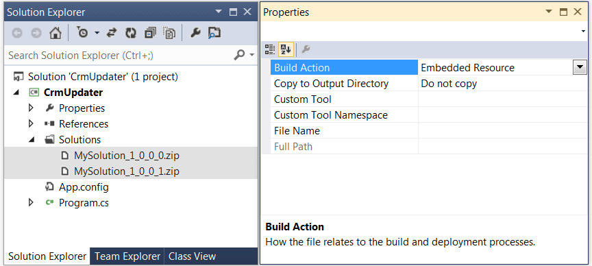
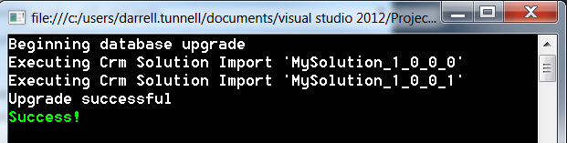
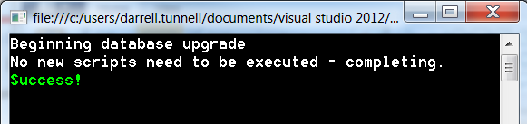
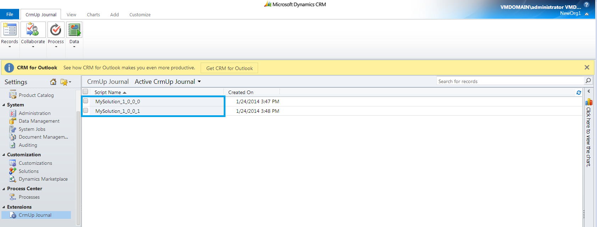

Brief Introduction
CrmUp can help to enable you and your Microsoft Dynamics Crm projects to reach that special DevOps nirvana known as "Continuous Delivery Land".
CrmUp uses a change script approach, which means it will apply only the necessary change scripts that are required in order to roll the target Dynamics CRM Organisation up to the current version. The change scripts are provided by you, in the form of "Dynamics Crm Solution" files. Solution files should be familiar to anyone who works with customising Dynamics Crm, and they effectively contain the customisations that will be applied.
At the heart of CrmUp lies DbUp, and CrmUp is an extension for DbUp that brings DbUp's philosophy to the realm of Microsoft Dynamics Crm.
Getting Started
Start by creating a simple C# console project in Visual Studio, and adding your Crm Solution files to it. From the properties window, mark them as Embedded Resources:
Next, use NuGet to install the CrmUp package:
Install-Package CrmUpFinally, in Program.cs, add the following code:
static int Main(string[] args)
{
var connectionString = args.FirstOrDefault()
?? "Url=http://crmurl:5555/orgname;Domain=domain; UserName=admin; Password=pasword;Timeout=00:15:00;";
var upgrader =
DeployChanges.To
.DynamicsCrmOrganisation(connectionString)
.WithSolutionsEmbeddedInAssembly(Assembly.GetExecutingAssembly())
.LogToConsole()
.Build();
var result = upgrader.PerformUpgrade();
if (!result.Successful)
{
Console.ForegroundColor = ConsoleColor.Red;
Console.WriteLine(result.Error);
Console.ResetColor();
return -1;
}
Console.ForegroundColor = ConsoleColor.Green;
Console.WriteLine("Success!");
Console.ResetColor();
return 0;
}
}
You now have a console application that can apply your Crm Solution files to a Dynamics Crm system in order to roll it up to the latest version! After running it, you'll see something like this:
The next time you run it, you'll see:
Why a console application?
For many reasons, all of which are mentioned over on DbUp's documentation :
Journaling
CrmUp creates a new entity in Crm, called "CrmUp Journal", and this is used to track the change scripts (Solution Files) that have been applied to the system. Before running, CrmUp checks the Journal records to work out which change scripts (Solution Files) can be skipped. After applying a change script (Solution File), an appropriate journal record is created to record the change that has been applied.
Resources
For information relating to DbUp please go to DbUp. The source code for CrmUp is all on GitHub. Any issues can also be raised there. CrmUp is licenced via the MIT licence (open source).